6.6 Surface Area¶
Guiding question
How much paint covers a funnel? The paint is a thin layer on a surface, so we need the area of a curved surface. Sections 6.3 and 6.4 found the volume of a solid of revolution; now we find the area of its boundary. A flat region has an area by Riemann sums, and a curve has a length by inscribed polygons (Section 6.5), but a curved surface has neither; we must first say what its area means. We do this honestly. For a cone and a cylinder, which can be unrolled flat without stretching, the area is the area of the flat piece. A surface of revolution is then approximated by chains of cone pieces (frusta, one for each segment of an inscribed polygon), and its area is the limit of their areas. We prove that the limit exists and equals \(2\pi\int R\,\sqrt{1+f'^2}\,dx\), where \(R\) is the distance to the axis. We check the formula on the cylinder, the cone, the sphere (Archimedes’ theorem: a zone of a sphere has an area that depends only on its height) and the torus, and use it for curves that turn the integral into a substitution or a perfect square, or that can be handled only numerically.
By the end of this section you should be able to:
-
say what is assumed (the area of a cone, and the area of a surface of revolution as a limit of frusta) and what is proved;
-
prove and use \(S=2\pi\int_a^bR(x)\sqrt{1+f'(x)^2}\,dx\) with \(R\) the distance from the curve to the axis, for the \(x\)-axis, the \(y\)-axis and the lines \(y=k\) and \(x=k\), and the same formula in \(y\) for a curve \(x=g(y)\);
-
recognize the curves for which the integral needs only a substitution or a perfect square, and give numerical values (checked against a frustum sum and a bound) for the others;
-
handle a vertical tangent at an end by switching to \(x=g(y)\);
-
prove and use the surface areas of the cylinder, cone, sphere and spherical zone, and find the area of a torus;
-
bound a surface area by \(2\pi m L\) and \(2\pi M L\), where \(L\) is the length of the curve.
What does the area of a curved surface mean?¶
For the length of a curve (Section 6.5) we took the least upper bound of the lengths of inscribed polygons. The same idea does not work for surfaces: if we inscribe in a cylinder a surface made of flat triangles, the total area of the triangles can be made as large as we like (the “Schwarz lantern”; we do not prove this here), so there is no least upper bound, and it is not the area we want. We need a different starting point. Two kinds of surface can be flattened without stretching, and their area is the area of the flat piece: the lateral surface of a cylinder, which unrolls to a rectangle, and the lateral surface of a cone, which unrolls to a sector of a disk.
Definition 6.6.1: Area of a cylinder and of a cone (S1)
A right circular cylinder of radius \(r\) and height \(l\) has lateral area \(2\pi r\,l\): cut along a vertical line and unroll it to a rectangle of width \(2\pi r\) and height \(l\). A right circular cone of base radius \(r\) and slant height \(l\) (the distance from the apex to the base circle along the surface) has lateral area
cut along a line through the apex and unroll it to a plane sector of radius \(l\) whose curved edge has length \(2\pi r\). This sector is the fraction \(\dfrac{2\pi r}{2\pi l}=\dfrac rl\) of the disk of radius \(l\), so its area is \(\dfrac rl\cdot\pi l^2=\pi r\,l\). We take these as the meaning of the area of a cylinder and of a cone.
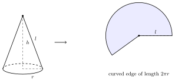
Figure. A cone (\(r=3\), \(h=4\), \(l=5\) in the units of the picture) is cut along a line through the apex and unrolled to a sector of radius \(l\) and arc length \(2\pi r\). The sector is the fraction \(\frac35\) of a disk (an angle of \(216^\circ\)), so its area is \(\frac35\pi\cdot5^2=15\pi=\pi r\,l\).
A frustum is a cone with the top sliced off, the surface made when a segment that does not cross an axis is revolved about the axis. With the cone area, we can find its area.
Theorem 6.6.2: The area of a frustum
Revolve a line segment of length \(l>0\) about an axis in its plane, where the segment lies on one side of the axis, and let \(r_1\ge0\) and \(r_2\ge0\) be the distances of its endpoints from the axis. The surface generated has area
In particular a cone (\(r_1=0\)) has area \(\pi r_2 l\) and a cylinder (\(r_1=r_2=r\)) has area \(2\pi r\,l\). (If \(r_1=r_2=0\) the segment lies on the axis and the area is \(0\).)
Proof. If \(r_1=r_2=r\) the segment is parallel to the axis, the surface is a cylinder, and its area is \(2\pi rl=\pi(r+r)l\) by (S1). If one distance is \(0\), the surface is a cone and the area is \(\pi rl\) by (S1), which is \(\pi(0+r)l\). Because the formula is symmetric in \(r_1\) and \(r_2\) we may now assume \(0<r_1<r_2\). Extend the segment beyond its short end until it meets the axis at the apex \(V\); the surface is the cone of base radius \(r_2\) with the small cone of base radius \(r_1\) cut off (Figure). Let \(s_1\) and \(s_2=s_1+l\) be the distances from \(V\) to the ends of the segment, the slant heights of the two cones. The triangles formed by the axis, the radius and the slant line are similar, so \(\dfrac{r_1}{s_1}=\dfrac{r_2}{s_1+l}\), that is \(r_2s_1=r_1s_1+r_1l\), so
The area of the frustum is the area of the big cone minus the area of the small one, which by (S1) is
(For \(r_1=1\), \(r_2=2\), \(l=\sqrt{10}\), the figure below: \(s_1=\sqrt{10}\), \(s_2=2\sqrt{10}\), and \(\pi\cdot2\sqrt{10}\cdot2-\pi\cdot\sqrt{10}\cdot1=3\pi\sqrt{10}\).) ◻ ∎
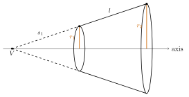
Figure. A frustum (solid lines) is a cone of slant height \(s_2=s_1+l\) minus a cone of slant height \(s_1\) (dashed). The radii are \(r_1\) and \(r_2\) and the slant height of the frustum is \(l\). Here \(r_1=1\), \(r_2=2\), \(s_1=\sqrt{10}\) and \(l=\sqrt{10}\).
Now let \(f\) be continuous on \([a,b]\) and let its graph be revolved about an axis. As in Section 6.5, a partition \(\Pi\) (\(a=x_0<x_1<\cdots<x_n=b\)) gives an inscribed polygon with vertices \(P_k=(x_k,f(x_k))\), segments of length \(\lambda_k=\sqrt{\Delta x_k^2+\Delta y_k^2}\), and the segment \(P_{k-1}P_k\) generates a frustum. The mesh of \(\Pi\) is the largest \(\Delta x_k\).
Definition 6.6.3: Area of a surface of revolution (S2)
Let a curve be revolved about a horizontal or vertical line (the axis) that the curve may touch but does not cross, and let \(R(x)\) denote the distance from the point \((x,f(x))\) of the curve to the axis. For a partition \(\Pi\) the frustum sum is the total area of the frusta, which by Theorem 6.6.2 is
The area of the surface of revolution is the limit \(S=\lim_{n\to\infty}\Sigma(\Pi_n)\) for partitions whose mesh tends to \(0\). (We prove below that for a curve with a continuous derivative this limit exists and does not depend on the partitions.) We take this as the meaning of surface area.
What is assumed and what is proved
Assumed (meaning of area): (S1), that the lateral area of a cone and of a cylinder is the area of the flat sector or rectangle it unrolls to, and (S2), that the area of a surface of revolution is the limit of the frustum sums. Proved below: the frustum formula (Theorem 6.6.2); that the limit in (S2) exists, does not depend on the partitions, and equals \(2\pi\int R\sqrt{1+f'^2}\,dx\) (Theorem 6.6.4); the formula in the variable \(y\) (Theorem 6.6.5); the bounds (Theorem 6.6.7); and the areas of the cylinder, cone, sphere, spherical zones and torus. Calculus I facts used: the Mean Value Theorem, the Fundamental Theorem of Calculus, the Extreme Value Theorem, that the integral preserves inequalities and is additive, and (F4) of Section 6.5: for a continuous \(h\), every Riemann sum \(\sum h(\xi_k)\Delta x_k\) (with \(\xi_k\) in the \(k\)th subinterval) is as close as we like to \(\int_a^bh\) once every \(\Delta x_k\) is small enough.
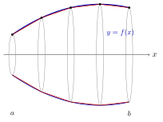
Figure. The curve \(y=f(x)\) and its mirror image in the axis (blue), the inscribed polygon and its mirror image (red), and the circles of revolution at the vertices \(x_0,\dots,x_4\) (gray). Each segment of the polygon generates one frustum; the frustum sum \(\Sigma(\Pi)\) is the total area of the four frusta.
The frustum sum is a sum of terms of the form (average radius)\(\times\)(circumference)\(\times\)(slant height): \(\pi(R_{k-1}+R_k)\lambda_k=2\pi\cdot\frac{R_{k-1}+R_k}2\cdot\lambda_k\). This is a Riemann sum for \(\int2\pi R\,ds\) in disguise, where \(ds=\sqrt{1+f'^2}\,dx\) is the element of arc length of Section 6.5. The following theorem makes this precise, and also deals with the difficulty that \(R\) is evaluated at the two ends \(x_{k-1}\) and \(x_k\) while the square root, by the Mean Value Theorem, is evaluated at another point \(\xi_k\).
Theorem 6.6.4: The surface area formula
Let \(f\) be continuous on \([a,b]\) with a continuous derivative, and let its graph be revolved about a horizontal or vertical line that the graph does not cross. Let \(R(x)\) be the distance from \((x,f(x))\) to the axis (\(R(x)=\lvert f(x)-k\rvert\) for the line \(y=k\), \(R(x)=\lvert x-k\rvert\) for the line \(x=k\)). Then the limit in (S2) exists, does not depend on the partitions, and
Proof. Write \(h(x)=\sqrt{1+f'(x)^2}\), continuous and at most \(H\) on \([a,b]\) for some number \(H\) (Extreme Value Theorem), and \(I=\int_a^b2\pi R\,h\,dx\). Take a partition \(\Pi\) with mesh \(\delta\).
Step 1 (the Mean Value Theorem). On each \([x_{k-1},x_k]\) there is a point \(c_k\) with \(\Delta y_k=f'(c_k)\Delta x_k\), so \(\lambda_k=\sqrt{\Delta x_k^2+f'(c_k)^2\Delta x_k^2}=h(c_k)\Delta x_k\). Hence
Step 2 (compare with a Riemann sum). Let \(T=\sum_k2\pi R(c_k)h(c_k)\Delta x_k\), a Riemann sum for the continuous function \(2\pi Rh\). Let \(M_k\) and \(m_k\) be the largest and smallest values of the continuous function \(R\) on \([x_{k-1},x_k]\). The three numbers \(R(x_{k-1})\), \(R(x_k)\), \(R(c_k)\) all lie in \([m_k,M_k]\), so \(\lvert R(x_{k-1})+R(x_k)-2R(c_k)\rvert\le2(M_k-m_k)\). Therefore
where \(U=\sum M_k\Delta x_k\) and \(L=\sum m_k\Delta x_k\).
Step 3 (\(U-L\) is small). By the Extreme Value Theorem \(M_k=R(u_k)\) and \(m_k=R(v_k)\) for points \(u_k,v_k\) of the \(k\)th subinterval, so \(U\) and \(L\) are Riemann sums of \(R\). By (F4) both are within \(\varepsilon\) of \(\int_a^bR\,dx\) when \(\delta\) is small, so \(U-L<2\varepsilon\). (This is the statement that a continuous \(R\) has small oscillation on small intervals.)
Step 4 (conclusion). By (F4) again \(\lvert T-I\rvert<\varepsilon\) for small \(\delta\). Hence \(\lvert\Sigma(\Pi)-I\rvert\le\lvert\Sigma-T\rvert+\lvert T-I\rvert<4\pi H\varepsilon+\varepsilon\) whenever \(\delta\) is small enough. As \(\varepsilon\) is arbitrary, \(\Sigma(\Pi)\to I\) as the mesh tends to \(0\), whatever the partitions are. ◻ ∎
For the \(x\)-axis and a curve above it, \(R=f\) and \(S=2\pi\int_a^bf\sqrt{1+f'^2}\,dx\). For the \(y\)-axis (\(0\le a<b\)), \(R=x\). The same statement holds with the roles of \(x\) and \(y\) exchanged.
Theorem 6.6.5: Surface area for a curve \(x=g(y)\)
Let \(g\) be continuous on \([c,d]\) with a continuous derivative, and revolve the curve \(x=g(y)\) about a horizontal or vertical line that it does not cross. Let \(R(y)\) be the distance from \((g(y),y)\) to the axis. Then
Proof. Reflect the plane in the line \(y=x\). The reflection preserves distances, so it carries the curve \(x=g(y)\) to the graph \(y=g(x)\) over \([c,d]\), the axis to a line of the other direction, the inscribed polygons to inscribed polygons, and the radii \(r_1,r_2\) and the segment lengths \(l\) to the same numbers. By Theorem 6.6.2 the frustum sums are equal, so the surfaces have the same area. Apply Theorem 6.6.4 to \(y=g(x)\) and rename the variable. ◻ ∎
Procedure 6.6.6: Choosing the radius
(1) Draw the curve and the axis. (2) Decide whether \(x\) or \(y\) is the independent variable: pick the one for which \(\sqrt{1+(\text{derivative})^2}\) simplifies, or the one for which the derivative stays finite on the whole interval (Theorem 6.5.5). (3) Write the radius as the distance from a point of the curve to the axis, in the same variable: for the curve \(y=f(x)\) it is \(f(x)\) about the \(x\)-axis, \(x\) about the \(y\)-axis, \(\lvert f(x)-k\rvert\) about \(y=k\), \(\lvert x-k\rvert\) about \(x=k\). (4) Integrate \(2\pi R\,ds\).
Knowledge check¶
Knowledge Check 6.6.1: Frusta and cones
(a) Find the area of a cone of base radius \(5\) and height \(12\). (b) Find the area of the frustum with radii \(2\) and \(5\) and slant height \(5\).
Knowledge Check 6.6.2: Which radius?
The curve \(y=x^2\), \(1\le x\le2\), is revolved about (a) the \(x\)-axis, (b) the \(y\)-axis, (c) the line \(y=-3\), (d) the line \(x=5\). Give the radius \(R(x)\) in each case. Do not integrate.
Knowledge Check 6.6.3: A vertical tangent
The curve \(y=\sqrt[3]{x}\), \(0\le x\le1\), is revolved about the \(x\)-axis. Why is \(\int_0^12\pi\sqrt[3]{x}\sqrt{1+f'(x)^2}\,dx\) not a good way to write the area, and what is a better one?
Pause and think 6.6.1: Why frusta?
We approximated a curve by segments to find its length. For a surface, why do we use frusta (one for each segment), and not flat triangles, as the pieces?
Answer and discussion
A surface of revolution is made of circles, so a segment of the inscribed polygon sweeps out a frustum whose area we know exactly (Theorem 6.6.2), and the sums of these areas converge (Theorem 6.6.4). Flat triangles inscribed in a cylinder do not converge: with many long thin triangles that are twisted against the surface (the Schwarz lantern) the total area grows without bound as the triangles get smaller. Matching the direction of the pieces to the surface matters for area, in a way it does not for length.
Bounds for the area¶
Since \(R\) is the radius of the circle that a point of the curve sweeps out, and \(ds\) the arc-length element, we have \(dS=2\pi R\,ds\): the area of a thin band is its circumference times its width, measured along the curve. If the radius is between two numbers, so is the area per unit length.
Theorem 6.6.7: Bounds for the surface area
With the notation of Theorem 6.6.4, let \(L=\int_a^b\sqrt{1+f'^2}\,dx\) be the length of the curve (Theorem 6.5.4). If \(m\le R(x)\le M\) on \([a,b]\) then
and there is a point \(\xi\) in \([a,b]\) with \(S=2\pi\,R(\xi)\,L\): the area is the circumference of a circle of the “average radius” times the length of the curve.
Proof. Multiply \(m\le R(x)\le M\) by the positive number \(2\pi h(x)\) and integrate over \([a,b]\); the integral preserves inequalities (Theorem 6.1.6), which gives \(2\pi mL\le S\le2\pi ML\). Dividing by \(2\pi L>0\) shows that \(S/(2\pi L)\) lies between the least and the greatest value of the continuous function \(R\) on \([a,b]\), so by the Intermediate Value Theorem \(R(\xi)=S/(2\pi L)\) at some \(\xi\). ◻ ∎
Archimedes: the sphere¶
Theorem 6.6.8: The area of a sphere (Archimedes)
Let a sphere have radius \(a\). (i) A zone between two parallel planes at distance \(v-u\) apart, both cutting the sphere, has area \(2\pi a\,(v-u)\). (ii) A cap of height \(a-b\), where \(0\le b<a\) is the distance of its plane from the centre, has area \(2\pi a\,(a-b)\). (iii) The whole sphere has area \(4\pi a^2\).
Proof. (i) Take the sphere as the surface made by revolving \(y=\sqrt{a^2-x^2}\) about the \(x\)-axis, with \(-a<u<v<a\). On \([u,v]\) the function \(f(x)=\sqrt{a^2-x^2}\) is positive with \(f'(x)=-x/\sqrt{a^2-x^2}\), continuous. Then \(1+f'^2=\dfrac{a^2-x^2+x^2}{a^2-x^2}=\dfrac{a^2}{a^2-x^2}\), so \(f\sqrt{1+f'^2}=\sqrt{a^2-x^2}\cdot\dfrac a{\sqrt{a^2-x^2}}=a\), a constant, and by Theorem 6.6.4 \(S=\int_u^v2\pi a\,dx=2\pi a(v-u)\).
(ii) Let \(0<b<a\) and \(\eta=\sqrt{a^2-b^2}\), so \(0<\eta<a\). The cap \(x\ge b\) is generated by revolving the curve \(x=g(y)=\sqrt{a^2-y^2}\), \(0\le y\le\eta\), about the \(x\)-axis (here \(g(\eta)=b>0\)). On \([0,\eta]\) we have \(g(y)\ge b>0\), so \(g'(y)=-y/g(y)\) is continuous. The radius is \(R=y\) and \(1+g'^2=\dfrac{g^2+y^2}{g^2}=\dfrac{a^2}{g^2}\). By Theorem 6.6.5
(iii) Cut the sphere by the planes \(x=\pm b\) with \(0<b<a\) into a zone of height \(2b\) and two caps of height \(a-b\). By (i) and (ii) the area is \(2\pi a(2b)+2\cdot2\pi a(a-b)=4\pi a^2\), whatever \(b\) is. (Each cap is the reflection of the other, so (ii) holds for the cap \(x\le-b\) too, and a hemisphere has area \(2\pi a^2\).) ◻ ∎
Pause and think 6.6.2: Why is the area so simple?
On the sphere, \(R\,ds=a\,dx\) (the proof shows \(f\sqrt{1+f'^2}=a\)). Explain in a sentence what this says about a thin band of the sphere and the cylinder of radius \(a\) around it.
Answer and discussion
A thin band of the sphere between \(x\) and \(x+dx\) has area \(2\pi R\,ds=2\pi a\,dx\), which is the area of the band of the cylinder of radius \(a\) between the same two planes. So the sphere and the cylinder (touching it along the equator) have the same area above each interval of \(x\), which is why every zone of the sphere has area \(2\pi a\times\) height, and the sphere has \(4\pi a^2\), the area of the cylinder of height \(2a\) without its caps.
Worked examples¶
Example 6.6.9: A line: the formula and the frustum agree
Revolve \(y=1+\dfrac x2\), \(0\le x\le4\), about the \(x\)-axis. Find the surface area by the formula, and check it with Theorem 6.6.2.
Solution. Set-up. The graph lies above the \(x\)-axis, so the radius is \(R=f(x)=1+\frac x2\). The derivative is \(f'(x)=\frac12\), continuous, and \(\sqrt{1+f'(x)^2}=\sqrt{1+\frac14}=\frac{\sqrt5}2\).
Integral. By Theorem 6.6.4, since the factor \(\frac{\sqrt5}2\) is constant,
Check. The graph is a single segment, so the surface is one frustum. Its radii are \(f(0)=1\) and \(f(4)=3\) and its slant height is \(l=\sqrt{4^2+2^2}=2\sqrt5\). By Theorem 6.6.2 its area is \(\pi(1+3)\cdot2\sqrt5=8\sqrt5\,\pi\), the same.
Answer. \(S=8\sqrt5\,\pi\approx56.2\).
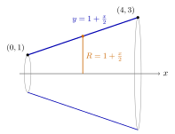
Figure. The segment, its mirror image and the circles of radii \(1\) and \(3\) at its ends: one frustum. The orange segment is the radius \(R=f(x)\), the distance from the axis to the curve (shown at \(x=2\), where \(R=2\)).
Example 6.6.10: A square root: multiply inside the root
Find the area of the surface made by revolving \(y=\sqrt{6x}\), \(1\le x\le4\), about the \(x\)-axis.
Solution. Derivative. \(f'(x)=\frac12(6x)^{-1/2}\cdot6=\dfrac3{\sqrt{6x}}\), continuous on \([1,4]\).
Simplify \(f\sqrt{1+f'^2}\). Since \(f>0\) we may put \(f\) under the root: \(f\sqrt{1+f'^2}=\sqrt{f^2+(f\,f')^2}\). Here \(f\,f'=\sqrt{6x}\cdot\dfrac3{\sqrt{6x}}=3\) and \(f^2=6x\), so
Integral. By Theorem 6.6.4, \(S=2\pi\int_1^4\sqrt{6x+9}\,dx\). Substitute \(u=6x+9\), \(du=6\,dx\); the limits become \(u=15\) (at \(x=1\)) and \(u=33\) (at \(x=4\)):
Check. One frustum on the chord from \((1,\sqrt6)\) to \((4,\sqrt{24}=2\sqrt6)\) has radii \(\sqrt6\) and \(2\sqrt6\) and slant height \(\sqrt{3^2+(\sqrt6)^2}=\sqrt{15}\), so its area is \(\pi\cdot3\sqrt6\cdot\sqrt{15}=9\pi\sqrt{10}\approx89.41\), close to \(S\approx91.79\) (the frustum sum with more frusta gets closer).
Answer. \(S=\dfrac{2\pi}9\bigl(33^{3/2}-15^{3/2}\bigr)\approx91.79\).
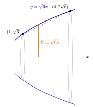
Figure. The curve of Example 6.6.10, its mirror image, the end circles and (dashed) the chord of the one-frustum check. The orange segment is the radius \(R=f(x)\) at \(x=2\), where \(R=\sqrt{12}\).
Example 6.6.11: A funnel: a perfect square
A funnel has the shape of the surface made by revolving \(y=\dfrac{x^3}6+\dfrac1{2x}\), \(1\le x\le2\), about the \(x\)-axis (lengths in centimetres). Find its surface area, and the volume of paint in a coat \(0.02\) cm thick.
Solution. Derivative. \(f'(x)=\dfrac{x^2}2-\dfrac1{2x^2}\), continuous on \([1,2]\).
A perfect square. Write \(A=\frac{x^2}2\) and \(B=\frac1{2x^2}\), so \(f'=A-B\) and \(AB=\frac14\). Then \(1+f'^2=1+A^2-2AB+B^2=A^2+2AB+B^2=(A+B)^2\) because \(1=4AB\). Since \(A+B>0\), \(\sqrt{1+f'^2}=\dfrac{x^2}2+\dfrac1{2x^2}\).
Integral. Multiply out \(f\cdot(A+B)\) term by term:
Antiderivative: \(\dfrac{x^6}{72}+\dfrac{x^2}6-\dfrac1{8x^2}\). By Theorem 6.6.4,
Paint. A coat of thickness \(0.02\) cm over \(\frac{47\pi}{16}\) cm\(^2\) has volume about \(0.02\cdot\frac{47\pi}{16}\approx0.185\) cm\(^3\).
Answer. \(S=\dfrac{47\pi}{16}\approx9.23\) cm\(^2\); paint \(\approx0.185\) cm\(^3\).
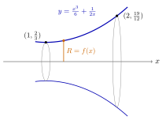
Figure. The funnel of Example 6.6.11: the curve, its mirror image and the circles at \(x=1\) and \(x=2\). The orange segment is the radius \(R=f(x)\) at \(x=\frac54\), where \(R=\frac{1393}{1920}\approx0.726\).
Example 6.6.12: A catenary: \(\sqrt{1+f'^2}=f\)
Revolve \(y=\cosh x=\dfrac{e^x+e^{-x}}2\), \(0\le x\le\ln3\), about the \(x\)-axis. Find the area.
Solution. Derivative. \(f'(x)=\dfrac{e^x-e^{-x}}2\), continuous. Simplify. \(f^2-f'^2=\dfrac{(e^x+e^{-x})^2-(e^x-e^{-x})^2}4=\dfrac{4e^xe^{-x}}4=1\), so \(1+f'^2=f^2\) and \(\sqrt{1+f'^2}=f\) because \(f>0\). Hence \(f\sqrt{1+f'^2}=f^2=\dfrac{e^{2x}+2+e^{-2x}}4\).
Integral.
using \(e^{2\ln3}=9\), \(e^{-2\ln3}=\frac19\) and \(\frac98-\frac1{72}=\frac{80}{72}=\frac{10}9\); the lower limit gives \(\frac18-0-\frac18=0\).
Check. The end radii are \(f(0)=1\) and \(f(\ln3)=\frac{3+1/3}2=\frac53\), and one frustum over the chord of length \(\sqrt{(\ln3)^2+(\frac23)^2}\approx1.285\) has area \(\pi\cdot\frac83\cdot1.285\approx10.77\), near \(S\) (a bit larger, because the chord is above the curve).
Answer. \(S=\pi\bigl(\frac{20}9+\ln3\bigr)\approx10.43\).
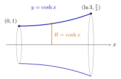
Figure. The catenary of Example 6.6.12, its mirror image and the end circles of radii \(1\) and \(\frac53\). The orange segment is the radius \(R=f(x)\) at \(x=\frac12\), where \(R=\cosh\frac12\approx1.128\).
Example 6.6.13: Change the variable: \(x=g(y)\)
The curve \(y=\ln\dfrac{x+\sqrt{x^2-1}}4\) runs from \((\frac{17}8,0)\) to \((\frac{65}{16},\ln2)\). Find the area when it is revolved about the \(y\)-axis.
Solution. Why not \(x\)? With \(y=f(x)\) one finds \(f'=\dfrac1{\sqrt{x^2-1}}\), so \(S=2\pi\int x\cdot\dfrac x{\sqrt{x^2-1}}\,dx\), which needs a trigonometric substitution, a method we avoid here. So we solve for \(x\). Put \(u=e^y\); then \(x=2u+\frac1{8u}\) means \(16u^2-8xu+1=0\), whose root with \(4u=x+\sqrt{x^2-1}\) is the one in the formula. Hence
and \(g(0)=2+\frac18=\frac{17}8\), \(g(\ln2)=4+\frac1{16}=\frac{65}{16}\), the two given endpoints. Derivative and simplification. \(g'(y)=2e^y-\frac{e^{-y}}8\). With \(A=2e^y\) and \(B=\frac{e^{-y}}8\) we have \(g'=A-B\) and \(AB=\frac14\), so \(1+g'^2=(A+B)^2=g^2\) and \(\sqrt{1+g'^2}=g\) (as \(g>0\)).
Integral. About the \(y\)-axis the radius is \(R=g(y)\), so by Theorem 6.6.5, using \(g^2=4e^{2y}+2\cdot2\cdot\frac18+\frac{e^{-2y}}{64}=4e^{2y}+\frac12+\frac{e^{-2y}}{64}\),
since at \(y=\ln2\) the bracket is \(8+\frac{\ln2}2-\frac1{512}\) and at \(y=0\) it is \(2-\frac1{128}\).
Answer. \(S=\pi\bigl(\frac{3075}{256}+\ln2\bigr)\approx39.91\).
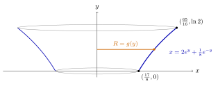
Figure. The curve \(x=2e^y+\frac18e^{-y}\) of Example 6.6.13 and its mirror image in the \(y\)-axis, with the circles of radii \(\frac{17}8\) and \(\frac{65}{16}\) at its ends. The orange segment is the radius \(R=g(y)\) from the \(y\)-axis to the curve, at \(y=\frac{\ln2}2\), where \(R=\frac{33\sqrt2}{16}\approx2.917\).
Example 6.6.14: One curve, three axes
The curve \(y=\dfrac{x^3}3+\dfrac1{4x}\), \(1\le x\le2\) (Example 6.5.10) has length \(L=\frac{59}{24}\) and \(\sqrt{1+f'^2}=x^2+\frac1{4x^2}\). Find the surface area when it is revolved about (a) the \(y\)-axis, (b) the line \(y=-1\), (c) the line \(x=3\).
Solution. The only thing that changes is the radius \(R\), the distance from \((x,f(x))\) to the axis. The factor \(\sqrt{1+f'^2}=x^2+\frac1{4x^2}\) is the same in all three.
(a) The \(y\)-axis. \(R=x\) (as \(x>0\)):
(b) The line \(y=-1\). The curve lies above the line (\(f>0\)), so \(R=f(x)-(-1)=f(x)+1\). Then \(S=2\pi\int_1^2f(A+B)\,dx+2\pi\int_1^2(A+B)\,dx\) with \(A+B=x^2+\frac1{4x^2}\). The second integral is \(2\pi L=\frac{59\pi}{12}\). For the first, \(f\,(A+B)=\bigl(\frac{x^3}3+\frac1{4x}\bigr)\bigl(x^2+\frac1{4x^2}\bigr)=\frac{x^5}3+\frac x{12}+\frac x4+\frac1{16x^3}=\frac{x^5}3+\frac x3+\frac1{16x^3}\), with antiderivative \(\frac{x^6}{18}+\frac{x^2}6-\frac1{32x^2}\), so
(c) The line \(x=3\). The curve lies to the left of the line (\(x\le2<3\)), so \(R=3-x\):
Check by the bounds. For (a) \(1\le R\le2\), so Theorem 6.6.7 gives \(2\pi L\le S\le4\pi L\), that is \(15.45\le S\le30.89\), and \(24.65\) is in this range.
Answer. (a) \(\frac\pi2(15+\ln2)\approx24.65\); (b) \(\frac{2489\pi}{192}\approx40.73\); (c) \(\frac\pi4(29-\ln4)\approx21.69\).
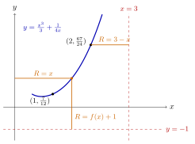
Figure. The curve of Example 6.6.14 and the three axes: the \(y\)-axis, the line \(y=-1\) and the line \(x=3\). The curve is the same; only the distance to the axis changes. The orange segments are the radii: \(R=x\) for the \(y\)-axis and \(R=f(x)+1\) for \(y=-1\) (both drawn at \(x=\frac32\)), and \(R=3-x\) for \(x=3\) (drawn at \(x=2\)).
Pause and think 6.6.3: Shells and surfaces
The shell formula of Section 6.4 is \(2\pi\int x\,h(x)\,dx\) with \(h\) the height of the strip, and the surface formula about the \(y\)-axis is \(2\pi\int x\sqrt{1+f'^2}\,dx\). Both have the circumference \(2\pi x\). What does \(h\) measure, what does \(\sqrt{1+f'^2}\,dx\) measure, and why can the second never be smaller than the first with \(h\,dx=dx\)?
Answer and discussion
In the shell formula \(h\,dx\) is the area of a thin vertical strip (height times width), and the shell is the strip swept around the axis, with volume \(2\pi x\cdot h\,dx\). In the surface formula \(\sqrt{1+f'^2}\,dx\) is the length of the piece of the curve over \(dx\), so \(2\pi x\sqrt{1+f'^2}\,dx\) is the area of the band swept out. Since \(\sqrt{1+f'^2}\ge1\), the piece of curve is at least as long as \(dx\) (Theorem 6.5.2), so \(S\ge2\pi\int x\,dx\), with equality only for a horizontal graph.
Example 6.6.15: A vertical tangent: switch to \(x=g(y)\)
Revolve \(y=\sqrt x\), \(0\le x\le4\), about the \(x\)-axis.
Solution. The problem. \(f'(x)=\frac1{2\sqrt x}\) is not defined at \(x=0\) (the tangent is vertical there), so Theorem 6.6.4 does not apply on \([0,4]\). Solve for \(x\): the same curve is \(x=g(y)=y^2\) for \(0\le y\le2\), and \(g'(y)=2y\) is continuous.
Set-up. About the \(x\)-axis the radius is \(R=y\). By Theorem 6.6.5,
Substitution. \(u=1+4y^2\), \(du=8y\,dy\), so \(y\,dy=\frac{du}8\); \(u=1\) at \(y=0\) and \(u=17\) at \(y=2\):
Remark. Written in \(x\) the same area is \(2\pi\int_0^4\sqrt x\sqrt{1+\frac1{4x}}\,dx=2\pi\int_0^4\sqrt{x+\frac14}\,dx=\frac{4\pi}3\bigl[(x+\tfrac14)^{3/2}\bigr]_0^4=\frac\pi6(17\sqrt{17}-1)\), the same number, but the derivative is not continuous at \(0\), so this integral is not covered by the theorem as stated; the form in \(y\) is. Check. The cone obtained from the chord from \((0,0)\) to \((4,2)\) has radii \(0\) and \(2\) and slant height \(\sqrt{20}\), so area \(\pi\cdot2\sqrt{20}\approx28.10\); the curve bulges above the chord, and \(S\approx36.18\) is larger.
Answer. \(S=\dfrac\pi6\bigl(17\sqrt{17}-1\bigr)\approx36.18\).
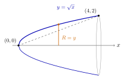
Figure. The curve of Example 6.6.15, its mirror image and the circle of radius \(2\) at \(x=4\); the tangent at the origin is vertical. The dashed chord is the cone of the check. The orange segment is the radius \(R=y=\sqrt x\) at \(x=2\) (the curve in the form \(x=y^2\) has \(R=y\) throughout).
Example 6.6.16: No closed form: a number, checked two ways
Revolve \(y=x^2\), \(0\le x\le1\), about the \(x\)-axis. Find the area.
Solution. Set-up. \(f'=2x\) and \(R=x^2\), so \(S=2\pi\int_0^1x^2\sqrt{1+4x^2}\,dx\). The integrand has no antiderivative that the substitutions of this chapter can find (it needs a trigonometric or hyperbolic substitution together with integration by parts), so we find the number by numerical integration (a calculator or Simpson’s rule): \(S\approx3.810\).
Check 1: a frustum sum. With \(4\) equal pieces (\(x=0,\frac14,\frac12,\frac34,1\); \(y=0,\frac1{16},\frac14,\frac9{16},1\)) the segments have lengths \(\frac{\sqrt{17}}{16},\frac5{16},\frac{\sqrt{41}}{16},\frac{\sqrt{65}}{16}\) (from \(\sqrt{(\frac14)^2+\Delta y^2}\) with \(\Delta y=\frac1{16},\frac3{16},\frac5{16},\frac7{16}\)), and the frusta have total area
close to \(3.810\) (with \(2\) pieces the frustum sum is \(3.979\), so the sums approach \(S\) as the pieces get shorter).
Check 2: bounds on each piece. Let \(L_k\) be the length of the curve over the \(k\)th quarter (\(0.2601,\ 0.3138,\ 0.4008,\ 0.5042\), by numerical integration of \(\sqrt{1+4x^2}\)). On each quarter \(R=x^2\) is between its values at the ends, so Theorem 6.6.7 on each piece, added, gives
that is \(2.535\le S\le5.180\), which contains \(3.810\). (With one piece the bounds would be only \(0\le S\le9.29\).)
Answer. \(S\approx3.810\).
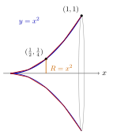
Figure. The curve of Example 6.6.16, its mirror image (blue) and the four-frustum polygon (red). The orange segment is the radius \(R=x^2\) at \(x=\frac12\), where \(R=\frac14\).
Example 6.6.17: Archimedes: zones and caps of a sphere
A sphere has radius \(5\). Find the area of (a) the zone between the planes \(x=-2\) and \(x=1\), and (b) the cap cut off by the plane \(x=2\) (the part with \(x\ge2\)).
Solution. (a) The zone is made by revolving \(y=\sqrt{25-x^2}\), \(-2\le x\le1\). Here \(f\sqrt{1+f'^2}=5\) (Theorem 6.6.8), since \(f^2(1+f'^2)=(25-x^2)+x^2=25\). So \(S=\int_{-2}^12\pi\cdot5\,dx=10\pi\cdot3=30\pi\approx94.2\). (b) The cap has \(b=2\) and height \(5-2=3\). Here \(\eta=\sqrt{25-4}=\sqrt{21}\) and the curve is \(x=\sqrt{25-y^2}\) for \(0\le y\le\sqrt{21}\), revolved about the \(x\)-axis. With \(\sqrt{1+g'^2}=\frac5{\sqrt{25-y^2}}\),
The two have the same area because they have the same height \(3\): \(2\pi a\cdot3\) with \(a=5\). The whole sphere is \(4\pi\cdot25=100\pi\).
Answer. (a) \(30\pi\); (b) \(30\pi\).
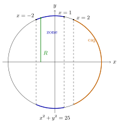
Figure. The circle of radius \(5\) revolved about the \(x\)-axis: the zone \(-2\le x\le1\) (blue) and the cap \(x\ge2\) (orange) both have height \(3\) and area \(30\pi\). The green segment is the radius \(R=\sqrt{25-x^2}\) at \(x=-\frac32\), where \(R=\frac{\sqrt{91}}2\approx4.77\).
Example 6.6.18: The torus
A torus is generated by revolving the circle \(x^2+(y-R)^2=r^2\) (\(0<r<R\)) about the \(x\)-axis: this is the torus of Theorem 6.4.15 with the axes renamed, tube radius \(r\) and distance \(R\) from the axis to the centre of the tube. Find its surface area, and compare with its volume for \(R=5\), \(r=3\).
Solution. Idea. The upper half of the circle, \(y=R+\sqrt{r^2-x^2}\), and the lower half, \(y=R-\sqrt{r^2-x^2}\), have vertical tangents at \(x=\pm r\). So cut the circle at \(x=\pm b\) with \(0<b<r\), and let \(\eta=\sqrt{r^2-b^2}\).
The middle part, \(\lvert x\rvert\le b\). For \(f=R\pm\sqrt{r^2-x^2}\), \(f'=\mp\frac{x}{\sqrt{r^2-x^2}}\) and \(\sqrt{1+f'^2}=\frac r{\sqrt{r^2-x^2}}\) (as in Theorem 6.6.8). The radius is \(f\), so for the upper and lower halves together
because the terms \(\pm\sqrt{r^2-x^2}\cdot\frac r{\sqrt{r^2-x^2}}=\pm r\) cancel, and \(\frac d{dx}\arcsin\frac xr=\frac1{\sqrt{r^2-x^2}}\).
The outer parts, \(b\le\lvert x\rvert\le r\). On the right, the upper arc is \(x=\sqrt{r^2-(y-R)^2}\) for \(R\le y\le R+\eta\) and the lower arc is the same function for \(R-\eta\le y\le R\); the radius is \(y\) and \(\sqrt{1+g'^2}=\frac r{\sqrt{r^2-(y-R)^2}}\). With \(w=y-R\) the two arcs together give
because \(\frac{wr}{\sqrt{r^2-w^2}}\) is an odd function, whose integral over \([-\eta,\eta]\) is \(0\). The left side gives the same, so the outer parts total \(8\pi Rr\arcsin\frac\eta r\).
Total. Since \((\frac br)^2+(\frac\eta r)^2=1\), if \(\theta=\arcsin\frac br\) then \(\frac\eta r=\cos\theta=\sin(\frac\pi2-\theta)\), so \(\arcsin\frac\eta r=\frac\pi2-\theta\). Hence
Numbers. For \(R=5\), \(r=3\): \(S=60\pi^2\approx592.2\), and (Theorem 6.4.15) \(V=2\pi^2Rr^2=90\pi^2\approx888.3\). Note \(V=\frac r2S\), just as the ball has \(V=\frac a3S\). (With \(b=\frac95\), \(\eta=\frac{12}5\) the two arcsines are \(\arcsin\frac35\approx0.6435\) and \(\arcsin\frac45\approx0.9273\), which add to \(\frac\pi2\approx1.5708\).)
Answer. \(S=4\pi^2Rr\); for \(R=5\), \(r=3\): \(S=60\pi^2\) and \(V=90\pi^2\). The area is the circumference \(2\pi r\) of the tube times the length \(2\pi R\) of the circle travelled by its centre (compare Pappus’ theorem, in words only, in Looking ahead).
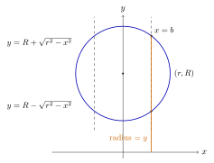
Figure. The circle of Example 6.6.18 with \(R=5\), \(r=3\) (so it spans \(2\le y\le8\)) and the cuts \(x=\pm b\) with \(b=\frac95\); the points \((\frac95,\frac{37}5)\) and \((\frac95,\frac{13}5)\) lie on the circle. The orange segment is the radius of revolution \(y\) (distance to the axis) for the upper point; the tube radius is \(r=3\).
Looking ahead¶
When a curve is given by \(x=f(t)\), \(y=g(t)\) or in polar form, the same circumference-times-arc-length idea gives a surface area, with the speed of the moving point in place of \(\sqrt{1+f'^2}\) (a later chapter on parametric and polar curves). Surfaces that are not surfaces of revolution need two-variable integrals, called surface integrals, and a later course on functions of several variables treats them, along with parametric surfaces. For the volume of the torus and its area, a theorem of Pappus says that each is the size of the plane figure (the area \(\pi r^2\) of the disk for the volume, the length \(2\pi r\) of the circle for the area) times the length \(2\pi R\) of the path of its centre; here we met it as the results \(V=2\pi^2Rr^2\) and \(S=4\pi^2Rr\). A curious fact for later: a “horn” that stretches to infinity can have a finite volume and an infinite surface area; see Homework Problem 13. The Calculus I area and volume ideas return in all of these.
Example bank¶
What’s in this bank. Fourteen further worked examples, grouped by problem type and ordered from easiest to hardest within each group.
-
Lines and set-up (Examples 6.6.19–6.6.20): a line checked against the frustum formula; writing and simplifying surface-area integrals without evaluating them.
-
Perfect squares: powers (Examples 6.6.21–6.6.22): \(y=\frac{x^4}8+\frac1{4x^2}\) about the \(x\)-axis; a logarithm curve about the \(y\)-axis.
-
Perfect squares: exponentials (Examples 6.6.23–6.6.24): \(y=\frac{e^{2x}}2+\frac{e^{-2x}}8\) about the \(x\)-axis; an exponential curve \(x=g(y)\) about the \(y\)-axis.
-
Substitution and cusps (Examples 6.6.25–6.6.26): a square-root curve that needs a substitution; a cusp at an end, handled by switching to \(x=g(y)\).
-
Numerical values and bounds (Examples 6.6.27–6.6.28): \(y=\sin x\) with a frustum check; a belt of a sphere and its average radius.
-
Comparing (Examples 6.6.29–6.6.30): a cone and a cylinder; the same arc about two different axes.
-
Proofs (Examples 6.6.31–6.6.32): shifting a graph; scaling a graph.
Group 1: Lines and set-up¶
Example 6.6.19: A line from \(4\) to \(12\)
Find the area of the surface made by revolving \(y=\frac34x\), \(4\le x\le12\), about the \(x\)-axis, by the formula and by Theorem 6.6.2.
Solution. \(f'=\frac34\), so \(1+f'^2=1+\frac9{16}=\frac{25}{16}\) and \(\sqrt{1+f'^2}=\frac54\). The radius is \(R=\frac34x\):
Check. The radii are \(\frac34\cdot4=3\) and \(\frac34\cdot12=9\) and the slant height is \(\sqrt{8^2+6^2}=10\), so the frustum has area \(\pi(3+9)\cdot10=120\pi\).
Answer. \(S=120\pi\approx377.0\).
Example 6.6.20: Set up and simplify
Write, simplify and do not evaluate the integral for the surface area of (a) \(y=x^2+1\), \(0\le x\le2\), about the \(x\)-axis; (b) \(y=\ln x\), \(1\le x\le e\), about the \(y\)-axis; (c) \(x=y^2\), \(0\le y\le2\), about the \(x\)-axis.
Solution. (a) \(R=f=x^2+1\) and \(f'=2x\), so \(S=\int_0^22\pi(x^2+1)\sqrt{1+4x^2}\,dx\).
(b) About the \(y\)-axis \(R=x\) and \(f'=\frac1x\), so \(\sqrt{1+f'^2}=\sqrt{\frac{x^2+1}{x^2}}=\frac{\sqrt{x^2+1}}x\) (\(x>0\)). Then the factor \(x\) cancels: \(S=\int_1^e2\pi x\frac{\sqrt{x^2+1}}x\,dx=2\pi\int_1^e\sqrt{x^2+1}\,dx\) (a method for it comes in a later chapter).
(c) The curve is given as \(x=g(y)\), \(g'=2y\); about the \(x\)-axis \(R=y\). By Theorem 6.6.5, \(S=\int_0^22\pi y\sqrt{1+4y^2}\,dy\), the integral of Example 6.6.15 (the same surface).
Group 2: Perfect squares with powers¶
Example 6.6.21: A quartic with an inverse square
Find the area when \(y=\dfrac{x^4}8+\dfrac1{4x^2}\), \(1\le x\le2\), is revolved about the \(x\)-axis.
Solution. \(f'=\frac{x^3}2-\frac1{2x^3}\). With \(A=\frac{x^3}2\), \(B=\frac1{2x^3}\) we have \(AB=\frac14\), so \(1+f'^2=(A+B)^2\) and \(\sqrt{1+f'^2}=\frac{x^3}2+\frac1{2x^3}\). Multiply out:
An antiderivative is \(\frac{x^8}{128}+\frac{3x^2}{32}-\frac1{32x^4}\), so
Answer. \(S=\dfrac{1179\pi}{256}\approx14.47\).
Example 6.6.22: A logarithm about the \(y\)-axis
Revolve \(y=\dfrac{x^2}8-\ln x\), \(1\le x\le4\), about the \(y\)-axis. Find the area.
Solution. \(f'=\frac x4-\frac1x\), and \(1+f'^2=1+\frac{x^2}{16}-\frac12+\frac1{x^2}=\frac{x^2}{16}+\frac12+\frac1{x^2}=\bigl(\frac x4+\frac1x\bigr)^2\) (because \(2\cdot\frac x4\cdot\frac1x=\frac12\)), so \(\sqrt{1+f'^2}=\frac x4+\frac1x\) for \(x>0\). About the \(y\)-axis the radius is \(x\):
Answer. \(S=\dfrac{33\pi}2\approx51.84\).
Group 3: Perfect squares with exponentials¶
Example 6.6.23: A hanging chain turned about the axis
Revolve \(y=\dfrac{e^{2x}}2+\dfrac{e^{-2x}}8\), \(0\le x\le\dfrac{\ln2}2\), about the \(x\)-axis.
Solution. \(f'=e^{2x}-\frac{e^{-2x}}4\). With \(A=e^{2x}\), \(B=\frac{e^{-2x}}4\), \(AB=\frac14\), so \(1+f'^2=(A+B)^2\), and \(A+B=2f\), so \(\sqrt{1+f'^2}=2f\). Then \(S=2\pi\int f\cdot2f\,dx=\pi\int4f^2\,dx\) with \(4f^2=e^{4x}+\frac12+\frac{e^{-4x}}{16}\):
using \(e^{4\cdot(\ln2)/2}=e^{2\ln2}=4\). Answer. \(S=\pi\bigl(\frac{195}{256}+\frac{\ln2}4\bigr)\approx2.94\).
Example 6.6.24: An exponential \(x=g(y)\) about the \(y\)-axis
Revolve \(x=e^{2y}+\dfrac{e^{-2y}}{16}\), \(0\le y\le\dfrac{\ln2}2\), about the \(y\)-axis.
Solution. \(g'=2e^{2y}-\frac{e^{-2y}}8\). With \(A=2e^{2y}\), \(B=\frac{e^{-2y}}8\) we have \(AB=\frac14\), so \(1+g'^2=(A+B)^2\) and \(\sqrt{1+g'^2}=A+B=2e^{2y}+\frac{e^{-2y}}8\). The radius about the \(y\)-axis is \(g(y)\). Multiply out:
By Theorem 6.6.5,
Answer. \(S=\pi\bigl(\frac{3075}{1024}+\frac{\ln2}4\bigr)\approx9.98\).
Group 4: Substitution and cusps¶
Example 6.6.25: A shifted square root
Revolve \(y=\sqrt{4x+3}\), \(0\le x\le3\), about the \(x\)-axis.
Solution. \(f'=\frac2{\sqrt{4x+3}}\), so \(f\,f'=2\) and \(f^2=4x+3\). Then \(f\sqrt{1+f'^2}=\sqrt{f^2+(ff')^2}=\sqrt{4x+7}\). Put \(u=4x+7\), \(du=4\,dx\) (\(u=7\) at \(x=0\), \(u=19\) at \(x=3\)):
Answer. \(S=\dfrac\pi3\bigl(19\sqrt{19}-7\sqrt7\bigr)\approx67.33\).
Example 6.6.26: A cusp at the end: \(y=x^{2/3}\)
Revolve \(y=x^{2/3}\), \(0\le x\le8\), about the \(x\)-axis.
Solution. \(f'=\frac23x^{-1/3}\) is not defined at \(x=0\) (a cusp with vertical tangent). Solve for \(x\): \(x=g(y)=y^{3/2}\) for \(0\le y\le4\) (at \(x=8\), \(y=8^{2/3}=4\)), with \(g'=\frac32y^{1/2}\) continuous, and \(1+g'^2=1+\frac{9y}4\). The radius is \(y\), so \(S=2\pi\int_0^4y\sqrt{1+\frac{9y}4}\,dy\).
Substitution. \(u=1+\frac{9y}4\), so \(y=\frac49(u-1)\), \(dy=\frac49\,du\), and \(u=1\) at \(y=0\), \(u=10\) at \(y=4\):
because \(40-\frac{20}3=\frac{100}3=\frac4{15}\cdot125\) and \(-(\frac25-\frac23)=\frac4{15}\). Answer. \(S=\dfrac{128\pi}{1215}\bigl(125\sqrt{10}+1\bigr)\approx131.16\).
Group 5: Numerical values and bounds¶
Example 6.6.27: One arch of the sine
Revolve \(y=\sin x\), \(0\le x\le\pi\), about the \(x\)-axis. Find the area numerically and check it with a frustum sum.
Solution. \(f'=\cos x\) and \(R=\sin x\), so \(S=2\pi\int_0^\pi\sin x\sqrt{1+\cos^2x}\,dx\). The substitution \(u=\cos x\) turns this into \(2\pi\int_{-1}^1\sqrt{1+u^2}\,du\), which needs a method of a later chapter; numerically \(S\approx14.42\). Check. Use the vertices \(x=0,\frac\pi4,\frac\pi2,\frac{3\pi}4,\pi\), with \(y=0,\frac{\sqrt2}2,1,\frac{\sqrt2}2,0\). By symmetry the four frusta come in two equal pairs, with total area
within about \(5\%\) of \(S\); the sum comes closer as the number of frusta increases.
Answer. \(S\approx14.42\).
Example 6.6.28: A belt of a sphere: the average radius
The circle \(x^2+y^2=25\) is revolved about the \(x\)-axis, and the belt \(-3\le x\le3\) is cut out. Find its area, the length \(L\) of the arc, and the average radius \(S/(2\pi L)\) of Theorem 6.6.7.
Solution. Area. By Theorem 6.6.8(i) with \(a=5\): \(S=2\pi\cdot5\cdot6=60\pi\approx188.5\).
Length. With \(f=\sqrt{25-x^2}\), \(\sqrt{1+f'^2}=\frac5{\sqrt{25-x^2}}\), so \(L=\int_{-3}^3\frac5{\sqrt{25-x^2}}dx=5\bigl[\arcsin\frac x5\bigr]_{-3}^3=10\arcsin\frac35\approx6.435\).
Average radius. \(\dfrac S{2\pi L}=\dfrac{60\pi}{2\pi\cdot6.435}=\dfrac{30}{6.435}\approx4.66\). On \([-3,3]\) the radius \(\sqrt{25-x^2}\) lies between \(\sqrt{25-9}=4\) and \(5\), and indeed \(4\le4.66\le5\), as Theorem 6.6.7 says (it gives \(2\pi\cdot4L\le S\le2\pi\cdot5L\), i.e. \(161.7\le S\le202.2\)).
Answer. \(S=60\pi\), \(L\approx6.435\), average radius \(\approx4.66\).
Group 6: Comparing¶
Example 6.6.29: A cone against its cylinder
A cone of base radius \(r\) and height \(h\) sits inside the cylinder of the same radius and height. Compare their lateral areas. (The volume of the cone is \(\frac13\) of that of the cylinder.)
Solution. The cone has slant height \(\sqrt{r^2+h^2}\) and area \(\pi r\sqrt{r^2+h^2}\); the cylinder has area \(2\pi rh\). The ratio is
because \(r>0\). So the cone always has more than half the lateral area of the cylinder, in contrast to its third of the volume. For \(r=5\), \(h=12\) the ratio is \(\frac{13}{24}\approx0.542\); it equals \(1\) only when \(r^2+h^2=4h^2\), that is \(r=\sqrt3\,h\).
Answer. The ratio is \(\dfrac{\sqrt{r^2+h^2}}{2h}>\dfrac12\).
Example 6.6.30: The same arc about two axes
The arc \(y=x^2\), \(0\le x\le1\), is revolved about the \(y\)-axis. Find the area and compare with Example 6.6.16 (the \(x\)-axis, \(\approx3.81\)).
Solution. About the \(y\)-axis \(R=x\), so \(S=2\pi\int_0^1x\sqrt{1+4x^2}\,dx\). With \(u=1+4x^2\), \(du=8x\,dx\) (\(u=1\) and \(u=5\)):
The area is about \(1.4\) times that of Example 6.6.16, though the arc is the same, because the radius \(x\) is larger than the radius \(x^2\) at every point of \((0,1)\).
Answer. \(S=\frac\pi6(5\sqrt5-1)\approx5.33\).
Group 7: Proofs¶
Example 6.6.31: Proof: shifting a graph upward
Statement. Let \(f\ge0\) have a continuous derivative on \([a,b]\), let \(S(f)\) be the area made by revolving its graph about the \(x\)-axis and \(L\) its length, and let \(C\ge0\). Then \(S(f+C)=S(f)+2\pi C\,L\).
Plan. The graph of \(f+C\) has the same derivative; only the radius changes, from \(f\) to \(f+C\).
Proof. \((f+C)'=f'\), which is continuous, and \(f+C\ge0\). By Theorem 6.6.4,
by linearity of the integral and Theorem 6.5.4. For \(f=\frac{x^3}3+\frac1{4x}\) on \([1,2]\) and \(C=2\): \(S(f)=\frac{515\pi}{64}\) and \(L=\frac{59}{24}\) (Example 6.6.14), so \(S(f+2)=\frac{515\pi}{64}+\frac{59\pi}6=\frac{3433\pi}{192}\approx56.17\). \(\blacksquare\)
A common mistake. Adding \(C\) to the area formula as \(S(f)+C\), or adding \(C\) inside the square root. The shift changes the radius only, so the extra area is the circumference-like term \(2\pi C\) times the length of the curve (a cylinder of radius \(C\) and the same arc length).
Example 6.6.32: Proof: scaling a graph
Statement. Let \(f\) have a continuous derivative on \([a,b]\), \(f\ge0\), and let \(\lambda>0\). The graph of \(f_\lambda(x)=\lambda f(x/\lambda)\) over \([\lambda a,\lambda b]\) (the original graph enlarged by the factor \(\lambda\) in both directions) has area \(S_\lambda=\lambda^2S\), where \(S\) is the area for \(f\).
Plan. Differentiate \(f_\lambda\) by the Chain Rule, substitute \(u=x/\lambda\) and collect the powers of \(\lambda\).
Proof. \(f_\lambda'(x)=\lambda f'(x/\lambda)\cdot\frac1\lambda=f'(x/\lambda)\), continuous. By Theorem 6.6.4
Let \(u=x/\lambda\), \(dx=\lambda\,du\); \(x=\lambda a\) gives \(u=a\) and \(x=\lambda b\) gives \(u=b\). Then \(S_\lambda=\lambda\cdot\lambda\int_a^b2\pi f(u)\sqrt{1+f'(u)^2}\,du=\lambda^2S\). (For \(f=x^2\) on \([0,1]\), \(\lambda=2\): \(f_2=\frac{x^2}2\) on \([0,2]\) has area \(\approx15.239=4\cdot3.810\).) \(\blacksquare\)
A common mistake. Expecting the area to scale like a length (\(\lambda\)) or like a volume (\(\lambda^3\)). One factor \(\lambda\) comes from the radius, the other from the arc length.
Answers and discussion¶
Knowledge Check 6.6.1. (a) The slant height is \(l=\sqrt{5^2+12^2}=13\), so the area is \(\pi\cdot5\cdot13=65\pi\). (b) \(\pi(2+5)\cdot5=35\pi\).
Knowledge Check 6.6.2. The radius is the distance from the point \((x,x^2)\) to the axis: (a) \(x^2\); (b) \(x\); (c) \(x^2-(-3)=x^2+3\); (d) \(5-x\) (since \(x\le2<5\)).
Knowledge Check 6.6.3. For \(f=\sqrt[3]x\), \(f'=\frac13x^{-2/3}\) is not defined at \(x=0\) (the tangent is vertical), so Theorem 6.6.4 does not apply on \([0,1]\). Use \(x=g(y)=y^3\) for \(0\le y\le1\), \(g'=3y^2\), \(R=y\): \(S=\int_0^12\pi y\sqrt{1+9y^4}\,dy\).